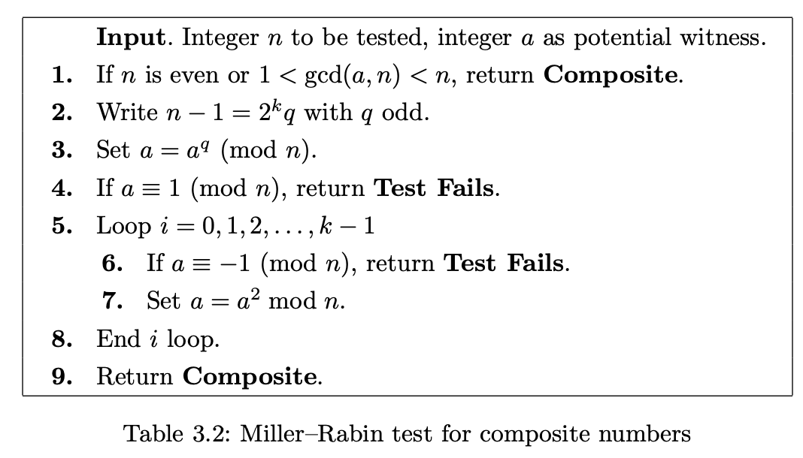

Lab 5 - Math 173A#
You are encouraged to work in groups of up to 3 total students, but each student should make their own submission on Canvas. (It’s fine for everyone in the group to have the same upload.)
Put the full names of everyone in your group (even if you’re working alone) here. (This makes grading easier.)
Names:
Suggestion#
Follow the instructions from the Lab 0 worksheet to make an Education Workspace for this lab.
Part 0: Imports#
Make the following imports:
from math import gcd
from Lab5_Helper import (
only_letters,
weave,
shift_string,
add_spaces,
to_base_b,
from_base_b,
factor_out_2
)
The only new function here is
factor_out_2. Get a sense for what it is returning by evaluatingfactor_out_2(48)andfactor_out_2(34)andfactor_out_2(33).
Paste in your code defining the
vigenerefunction from Lab 1. (I believe I have included all the necessary imports likeonly_letters, but feel free to add more if yourvigenerefunction depends on them.)
Part 1: The Miller-Rabin primality test#
Here is pseudo-code for implementing this primality test from Table 3.2 in Hoffstein, Pipher, Silverman.

Follow the pseudo-code to implement the Miller-Rabin primality test. To get you started, the skeleton of the function is written below.
def miller_rabin(n, a):
if (n%2 == 0):
return "Composite"
if (1 < gcd(a,n)) and (gcd(a,n) < n):
return "Composite"
# Define k and q as in Step 2.
# Step 3 goes here.
if (a%n) == 1:
return ??? # Step 4
for i in range(k): # i = 0, 1, 2, ..., k-1
if (a%n) == ???: # -1 by itself won't work
return "Test Fails"
??? # Step 7 goes here. Be sure to match this level of indentation.
return "Composite" # Step 9
Check your work using Example 3.20, verifying that
23witnesses the compositeness ofn = 172947529but that17and3do not.
Explain why we do not include
i = kat the end of the for loop. (Hint. There are two possibilities for that step, either \(a \equiv 1 \bmod n\) or \(a \not\equiv 1 \bmod n\). Explain why in either case, the number \(n\) must be composite. This is why we just skip that iteration of the for loop and return"Composite".)
Part 2. Using an RSA decryption exponent to factor N#
Choose one of the posts from the “Lab 4 RSA” thread which includes a ciphertext
Y(and not your own Post!). Define the relevant values from that post:
N =
e1 =
d1 =
e =
c =
Y =
Read “Fact 1” and its proof from the end of Section 1 of Boneh’s article, Twenty Years of Attacks on the RSA Cryptosystem.
Paste in your definition of
miller_rabinfrom above, but make the following two changes.
Change the name of the function from
miller_rabintouse_dand add two more arguments,e1andd1as inputs to the function.Instead of factoring out
2fromn-1, we want to factor2out of ???. Replacen-1in Step 2 from the Miller-Rabin pseudo-code appropriately to match what is in the Boneh article.
Define
kandqas inside thisuse_dfunction. (You should not be usingN-1here.)
Try various values of
awithuse_d(N, a, e1, d1)until you have a value ofafor which the function returns"Composite". (One of the first values you try should work.)
By taking an appropriate power of
amoduloN(for the sameaas in the previous part, the valueskandqyou computed are relevant), find a value ofzsuch that \(z \not\equiv \pm 1 \bmod N\) and \(z^2 \equiv 1 \bmod N\). (I expect this will require computing some powers ofa. You do not need to automate this step unless you want to.)
Find a nontrivial factor
pofNusing the value ofzyou just found.
Check that the following both hold.
pis neither1norN.
N%pis0.
Define
qto be the other prime factor. (This will overwrite the value ofqyou found above fromfactor_out_2, but we won’t need it again.) When definingq, useq = N//p(note the two slashes) to tell Python thatqshould be an integer.
Check that
N == p*qisTrue.
Part 3. Decrypting the secret message#
This part is intended to be more straightforward than the previous parts.
Recall that
cwas created usinge, note1. Finddcorresponding toe. (You will need to use thepandqyou found above.)
Find the original secret integer
xcorresponding tocusing the decryption exponent you just computed.
Convert
xto a Vigenère key for decryption (thus the26-aterms) using the following code.
decrypt_key = [26-a for a in to_base_b(x, 26)]
Decrypt the message
Yusing yourvigenerefunction and this decryption key. If what you get seems to be English, then you’re done with this lab. (If you don’t get English and you can’t find a mistake in your work, try another message from Ed Discussion. It’s always possible a mistake was made during the original encryption.)
Submission#
Using the
Sharebutton at the top right, enable public sharing, and enable Comment privileges. Then submit the created link on Canvas.
(Don’t just copy the browser URL. Copy the link that is provided after you click the “Share” button. It won’t be available until you enable public sharing.)
Reminder: Everyone in the group needs to submit this link on Canvas.
![Created in deepnote.com]() Created in Deepnote
Created in Deepnote